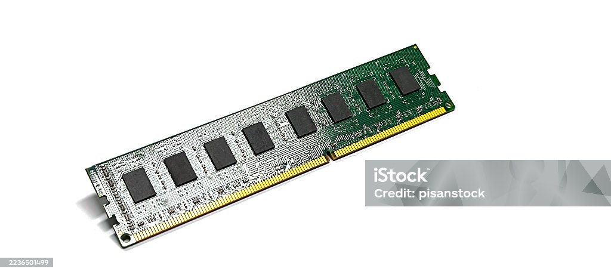
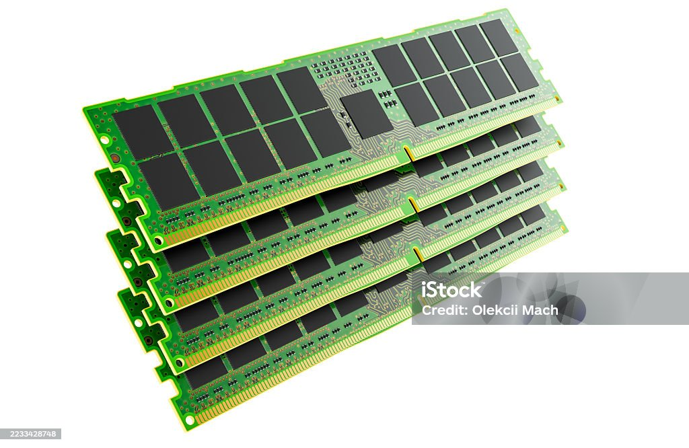
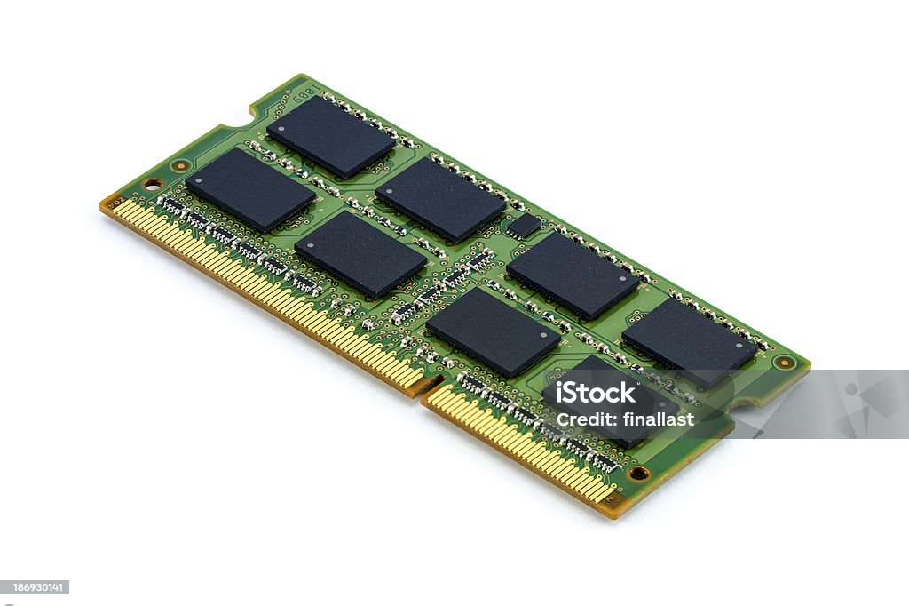

Las memorias RAM (Random Access Memory) son un componente fundamental en cualquier equipo de cómputo, ya que permiten almacenar datos temporalmente para que el procesador pueda acceder rápidamente a ellos y ejecutar tareas con mayor rapidez.
En TechParts, contamos con una amplia variedad de módulos RAM que cubren desde necesidades básicas hasta exigencias profesionales y gaming, con tecnologías DDR3, DDR4 y DDR5.
Tipos de Memoria RAM que ofrecemos
- DDR3: Ideal para equipos de uso cotidiano y actualización económica.
- DDR4: Mayor velocidad y eficiencia energética, perfecta para la mayoría de usuarios modernos.
- DDR5: La tecnología más avanzada, diseñada para gamers, edición de video y aplicaciones profesionales.
¿Por qué elegir nuestra RAM?
- Garantía de calidad y compatibilidad con múltiples plataformas.
- Precios competitivos y asesoría personalizada.
- Soporte técnico experto para ayudarte a elegir el módulo adecuado.
- Opciones con disipadores térmicos para mayor estabilidad en overclocking.


